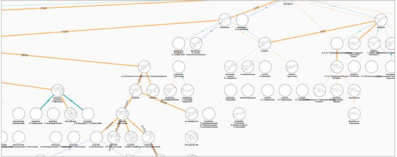
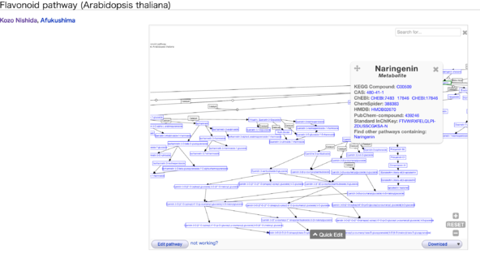

BH15.15/PlantMetabolomics
提供：TogoWiki
目次 |
ゴール
植物2次代謝パスウェイ解析のための情報基盤の構築
メンバー
時松、福島、西田、大野
背景
- 理研CSRSでは植物メタボロームプロファイルデータベース AtmetExpress を公開している (統合化推進プログラムのデータベース)。
- AtmetExpress はパスウェイ統合、可視化を行うための情報基盤の構築がまだできていない。
- 特に2次代謝物質のパスウェイ解析に注目している。
- 植物2次代謝物質は多様であり、反応ネットワークとしては未だ整理されていない情報が存在する。
- 上記を考慮し、「散在するデータの統合、キュレーション(クオリティが低いデータも存在するため)を行う独自のパスウェイ解析基盤」が必要である。
- 最初のターゲットをフラボノイドに絞り上記の改善を図る
2次代謝物情報のキュレーション (時松、福島)
背景
- シロイヌナズナメタボローム中のフラボノイド候補の分子情報の整備
- 代謝産物の構造式の描画様式は目的により異なる（2Dでの機械可読性の高さ、3D分子構造の最適化目的 etc.）
{kind=link}
{kind=link}
- mol形式からInChIへの変換の際に、描画形式により異性中心の向きを読み取れないことがある
- KNApSAcK C00007570 Mills描画（上図左）：InChI=1S/C61H66O34/c1-82-35-13-25(14-36(83-2)46(35)73)6-12-43(70)94-56-45(72)32(66)21-86-60(56)95-57-52(79)49(76)40(22-84-42(69)11-5-24-3-8-28(9-4-24)87-58-53(80)50(77)47(74)38(20-62)91-58)93-61(57)90-37-18-29-33(88-55(37)26-7-10-30(64)31(65)15-26)16-27(63)17-34(29)89-59-54(81)51(78)48(75)39(92-59)23-85-44(71)19-41(67)68/h3-18,32,38-40,45,47-54,56-62,66,72,74-81H,19-23H2,1-2H3,(H4-,63,64,65,67,68,70,73)/p+1/b11-5+/t32-,38-,39-,40-,45+,47-,48-,49-,50+,51+,52+,53-,54-,56-,57-,58-,59-,60+,61-/m1/s1、InChIKey=QRNIDVBVORPNBX-YYZQHOFDSA-O
- KNApSAcK C00007570 椅子型描画（上図左）：InChI=1S/C61H66O34/c1-82-35-13-25(14-36(83-2)46(35)73)6-12-43(70)94-56-45(72)32(66)21-86-60(56)95-57-52(79)49(76)40(22-84-42(69)11-5-24-3-8-28(9-4-24)87-58-53(80)50(77)47(74)38(20-62)91-58)93-61(57)90-37-18-29-33(88-55(37)26-7-10-30(64)31(65)15-26)16-27(63)17-34(29)89-59-54(81)51(78)48(75)39(92-59)23-85-44(71)19-41(67)68/h3-18,32,38-40,45,47-54,56-62,66,72,74-81H,19-23H2,1-2H3,(H4-,63,64,65,67,68,70,73)/p+1/b11-5+/t32-,38-,39?,40-,45?,47?,48-,49?,50-,51?,52-,53-,54+,56+,57-,58?,59-,60+,61?/m1/s1、InChIKey=QRNIDVBVORPNBX-VQZKQUEWSA-O
- 前項の理由により同じ分子を指すDBエントリーがInChIの完全マッチングではリンクできず、化合物DB間のリンクを取るうえでの障害になっている。
- 当グループでは、シロイヌナズナフラボノイド候補分子について、WikiPathwayを用いて可能な限り代謝パスウェイ情報を作成したい
- その際に、PubChemなどのIDに可能な限り紐付けをしたい
- mol形式からInChIへの変換の際に、描画形式により異性中心の向きを読み取れないことがある
方法
- (1) InChIを取得用構造式molファイル、Pathway貼り付け用構造式画像の作成
- Accelrys Draw 4.2を用いて、候補159分子についてmolファイルを作成
- 立体情報に複数の候補がある場合は両方描画
- 糖分子を含む化合物（96分子）については、Mills式（2D機械可読性高い）と椅子型配座（ヒトが認識しやすい）の両方を作成
- Accelrys Draw 4.2を用いて、候補159分子についてmolファイルを作成
- Accelrys Draw 4.2を用いて、各molファイルのpng形式画像を作成
- MarvinSketch15.2.9を用いて、各molファイルのsvg形式画像を作成
- IUBMB InChIコンバーター1.04 を用いてmolファイルをInChI、InChIkeyに変換
- 得られたInChIから、PubChemPyを用い、PubChem CIDを取得
結果
- 226 molファイル、png画像、svgを作成
- 糖を含む96分子のmills形式由来InChIと椅子型配座由来のInChIを比較いたところ、すべてについてInChIは異なることを確認した
- PubChem CIDの取得まで完了、詳細な解析はこれから
今後
- PubChem CIDの詳細な解析（same connectivity CIDの確認）
- 他のDBとのリンク情報の確認
- 整理した情報をWikiPathwayで利用するためのFeedBack（WikiDataへ？）
2次代謝物情報のIDリンクのRDF化、反応ネットワークの構築、可視化 (福島、西田、大野)
方法
- ドラフト反応ネットワーク情報の共有
- 上記の化合物情報をKEGG, ChEBI, pubchemと照合 cytoscape で可視化、さらにキュレーション、を繰り返す
- ndex cynetshare CyWidget でネットワーク情報を共有
- KNApSAcK中の植物2次代謝物のIDリンク
- wikidata に追加。その情報は即時RDF化され[https://query.wikidata.org/ から取得可能
- 最終的な情報はwikipathwaysで公開
- wikipathwaysではwikidataに追加したIDリンク情報が閲覧可能
- wikipathwaysの情報も即時ではないがRDF化され endpoint から取得可能
結果
- http://chianti.ucsd.edu/~kono/ci/app/bh1515/
- cytoscapeを用い、可視化した我々の手による植物2次代謝パスウェイ 
- 白抜きはKEGGにエントリーがないもの
- 細いエッジは反応に関わる酵素遺伝子の情報が明らかでないもの
- http://www.wikipathways.org/index.php/Pathway:WP3620
- wikipathways 上での我々の我々の手による植物2次代謝パスウェイ 
- IDの参照情報が得られる。我々のキュレーション結果によるIDリンク情報を反映させることが可能
- wikidataを活用 (endpointからの情報を直接的に活用しているわけではない。詳細は Egon Willighagenのgithubリポジトリ を参照)
{kind=link}
{kind=link}
今後
- 代謝物プロファイルのパスウェイ上での可視化
- shiny を用いた webapp 化